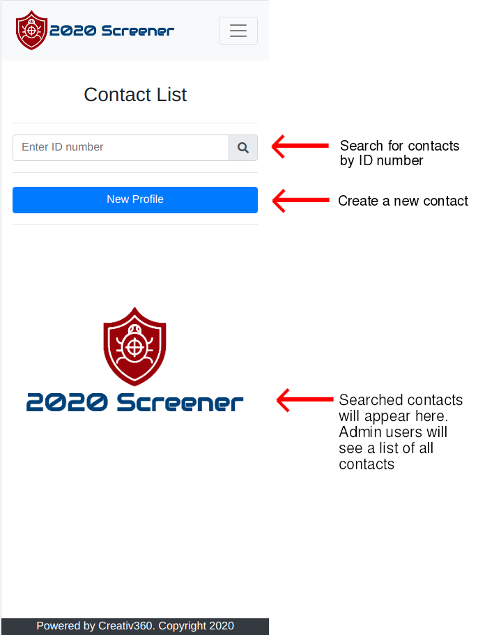
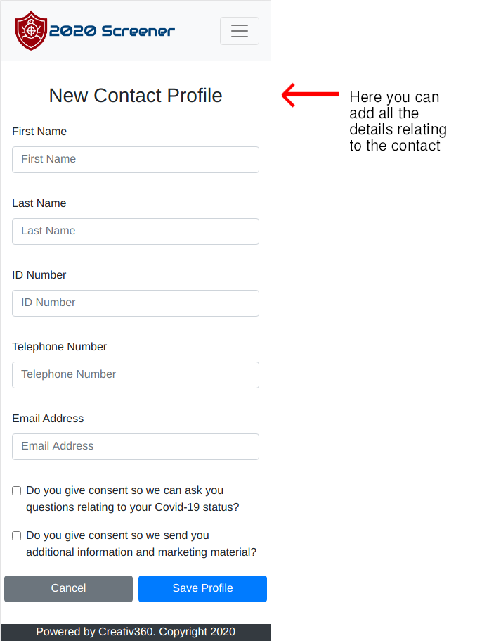
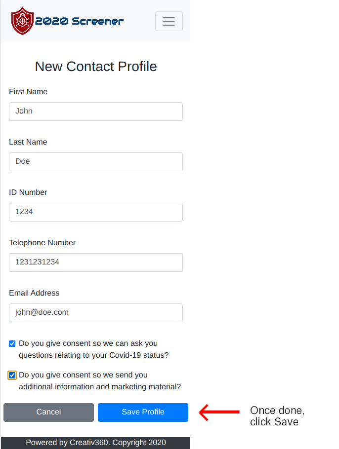
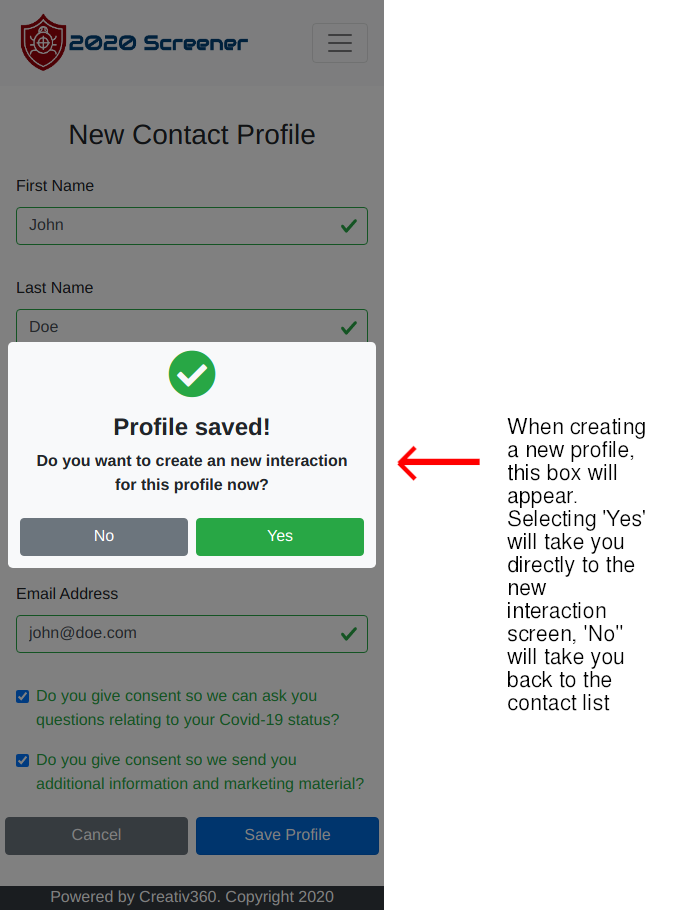
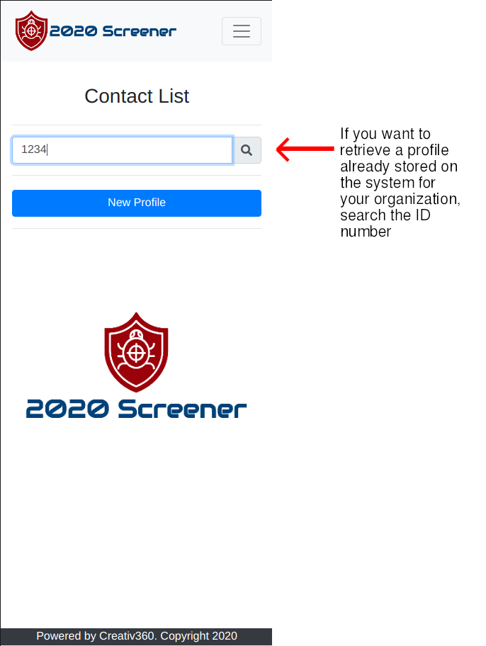
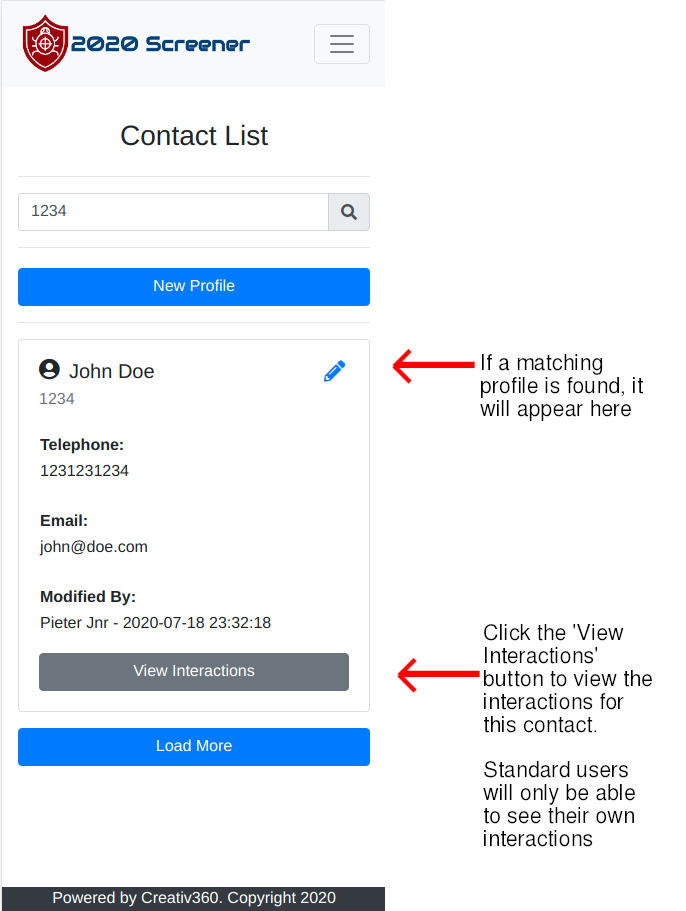
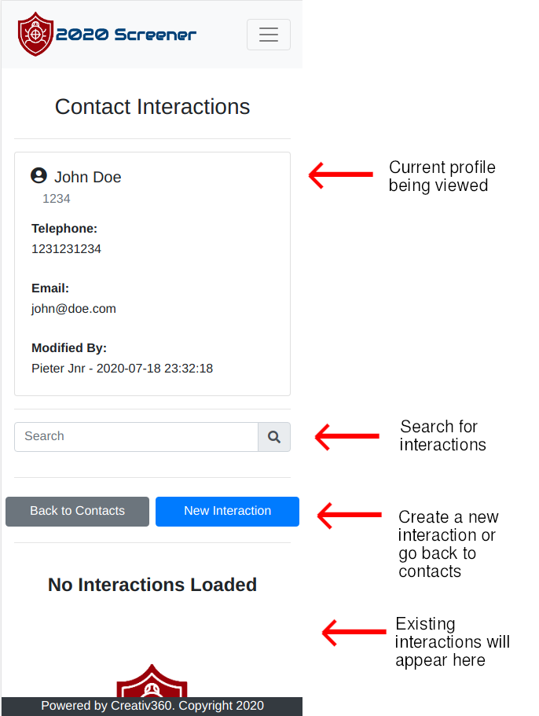
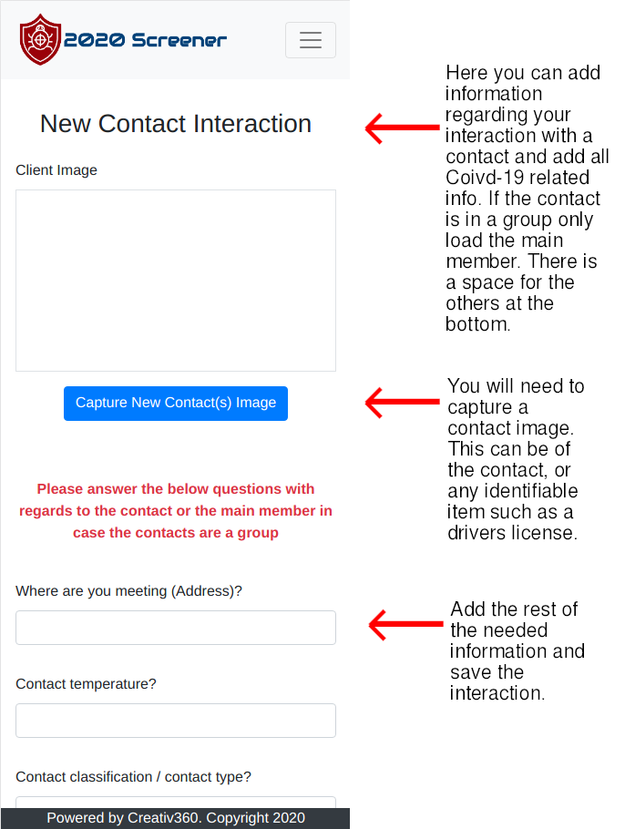
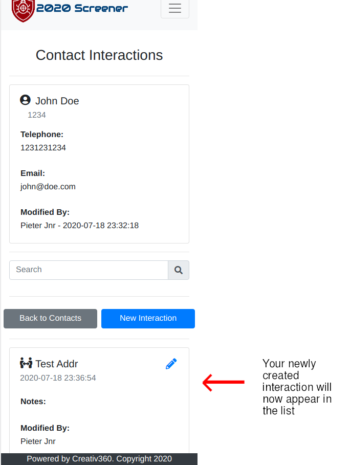
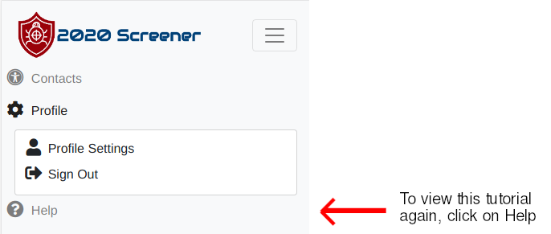

Let's get started!

When you open the app you will land on the contact list page. Here you can search for contacts by their ID number or create new contact profiles
When clicking on new the new profile button, you will land on this page. It allows you to fill in all details relating to your contact.
Fill in the details, then click save.
This box will appear when you create a new profile. Clicking on no will take you back to the contact list, while clicking yes will take you to the contact interaction create screen.
You will now be able to search the contact by ID number. We gave John Doe the ID number of '1234'
Once the contact is found, it will appear in the list
Click on the 'View Interactions' button on the contact list and you will be brought to the 'Contact Interaction List'. This will only display interactions for the current user with the selected contact.
Clicking on the new button will allow you to load a new contact interaction.
After the interaction has been saved you will return to the 'Contact Interaction List'. Note that the new interaction now appears at the bottom.
This tutorial briefly covered the 2020 Screener application so you can get started. If you ever wish to view this tutorial again, use the 'Help' section in the menu.
